Llegan al país las Air Jordan 1 High Prototype y en esta nota exclusiva te contamos todo lo que hay que saber sobre el par y su lanzamiento.
Las Air Jordan 1 High «Protoype» estarán disponibles en el país este Viernes 1 de Abril en Dionysos y Tienda Fitzrovia mediante Raffle a las 10.00AM. Confeccionado con cuero premium multicolor, revestimientos de nobuk y detalles reflectivos, este par establece un nuevo estándar sobre cómo utilizar tu calzado.
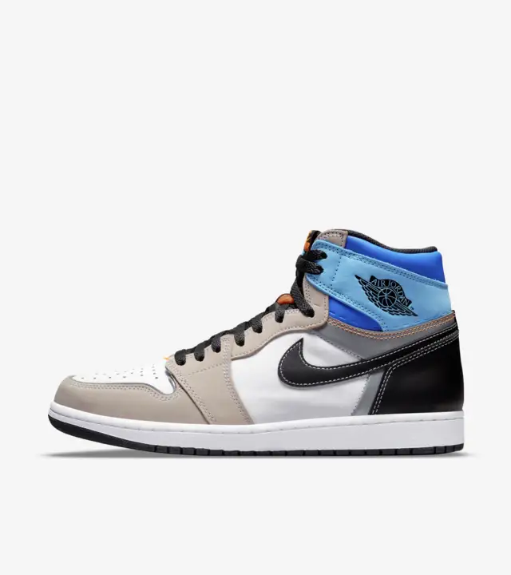
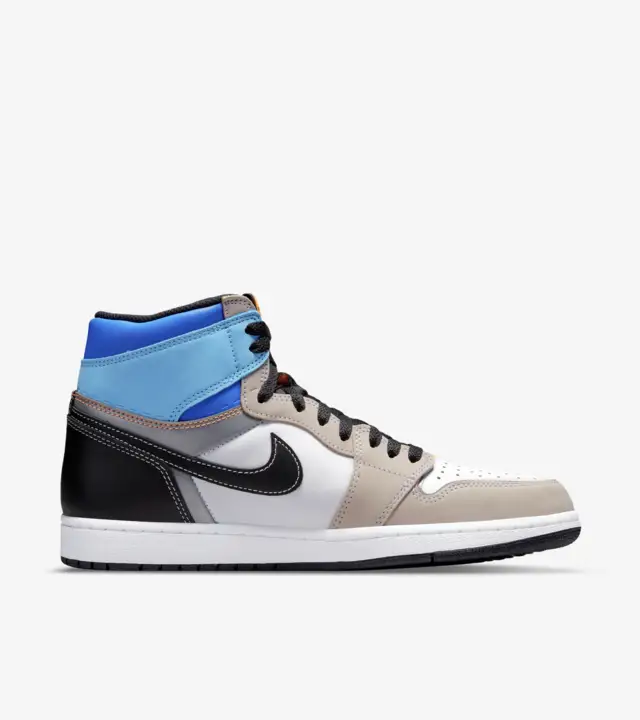
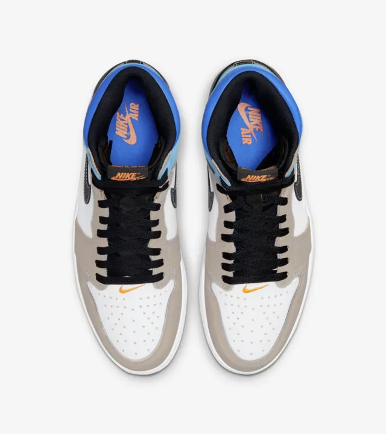
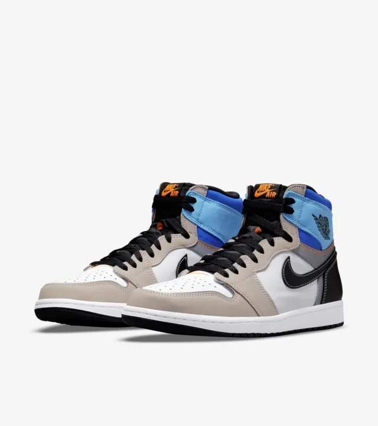
Este par originalmente salio el 24 de Septiembre de año pasado pero estan llegando al pais este mes, manejaba un precio de retail de 170 USD. La curiosidad de este par es esa línea entre la zona media y alta del calzado, como si fuera un punteo para en serio pasarle la tijera. Yo creo que a alguien las hará Low pero el resto de ganadores de los Raffles las usarán High como corresponde.
Jordan y el PSG anuncian nueva camisieta
El equipo de la capital francesa, PSG, presentó junto a Jordan su cuarta equipación inspirada en los Chicago Bulls. Conócela a continuación.
Los parisinos están a una semana de jugar contra el Real Madrid por la ida de Octavos de final de Champions League. Para prepararse aún mas mentalmente para dicho partido, el PSG presentó el día de hoy su cuarta indumentaria con el famoso ‘Jumpman’ en el pecho.
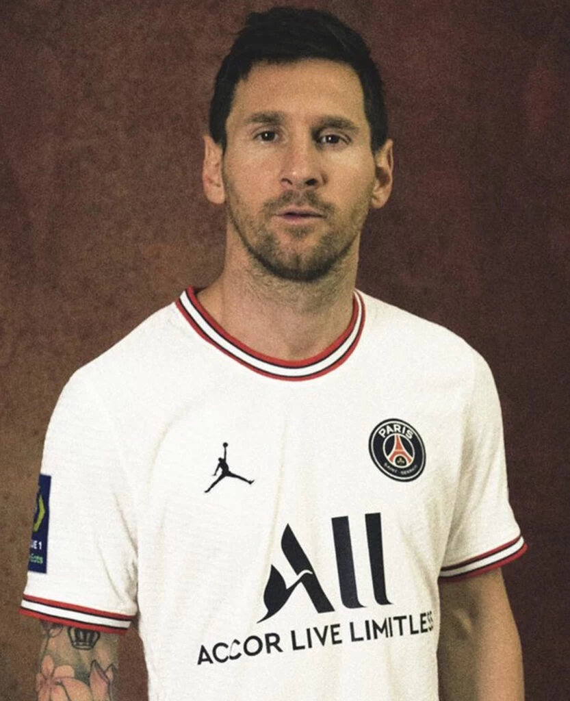
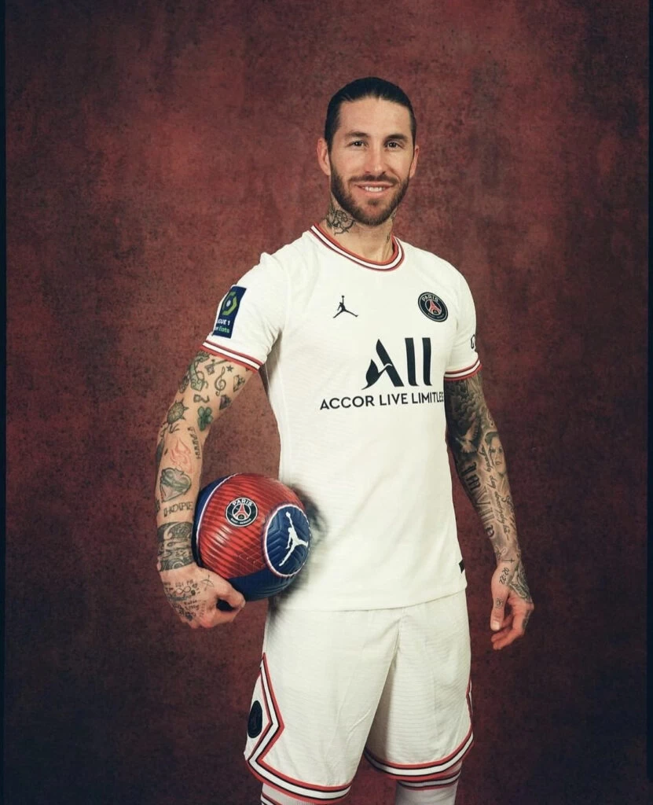
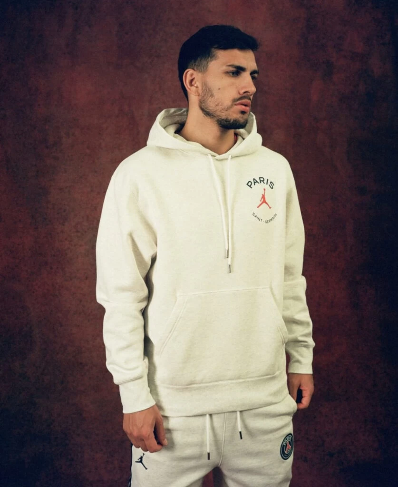
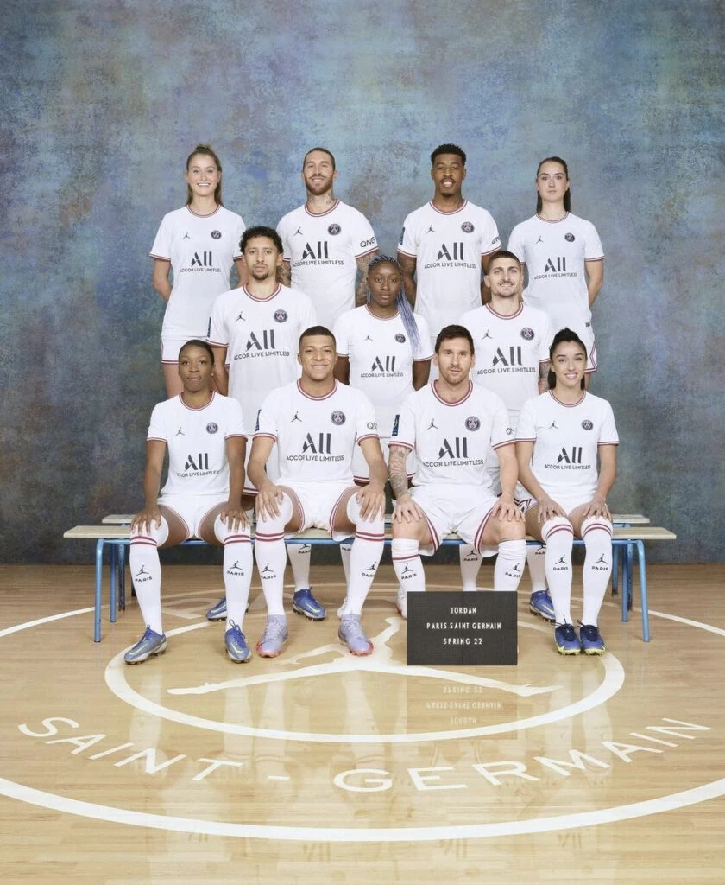
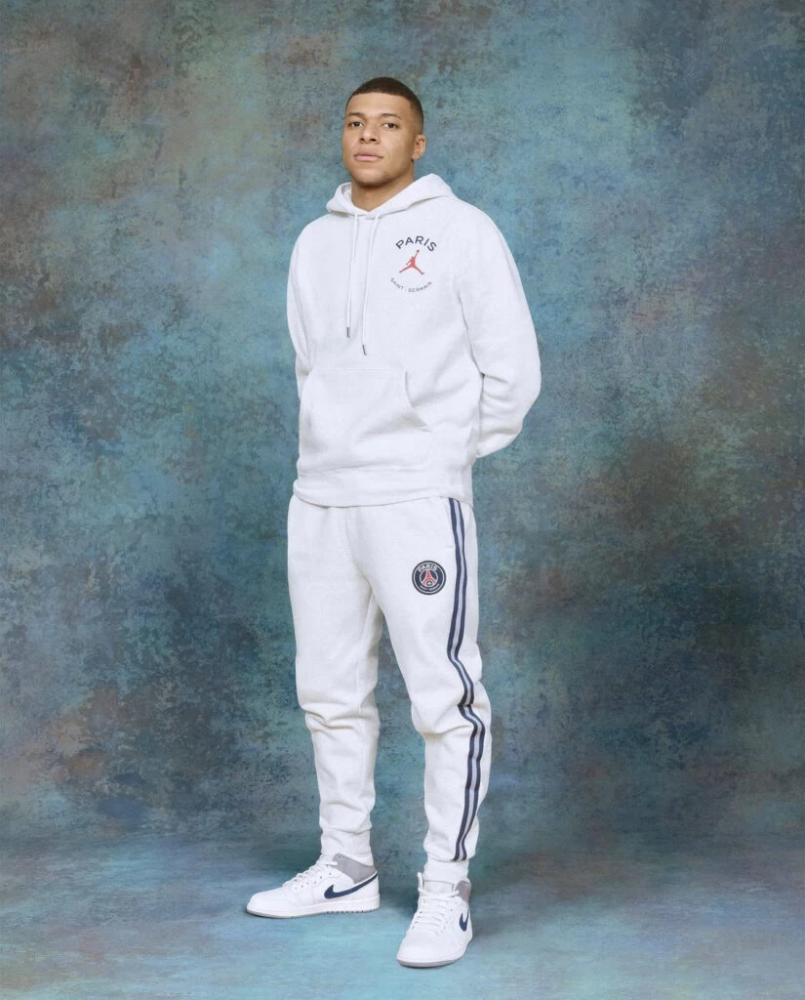
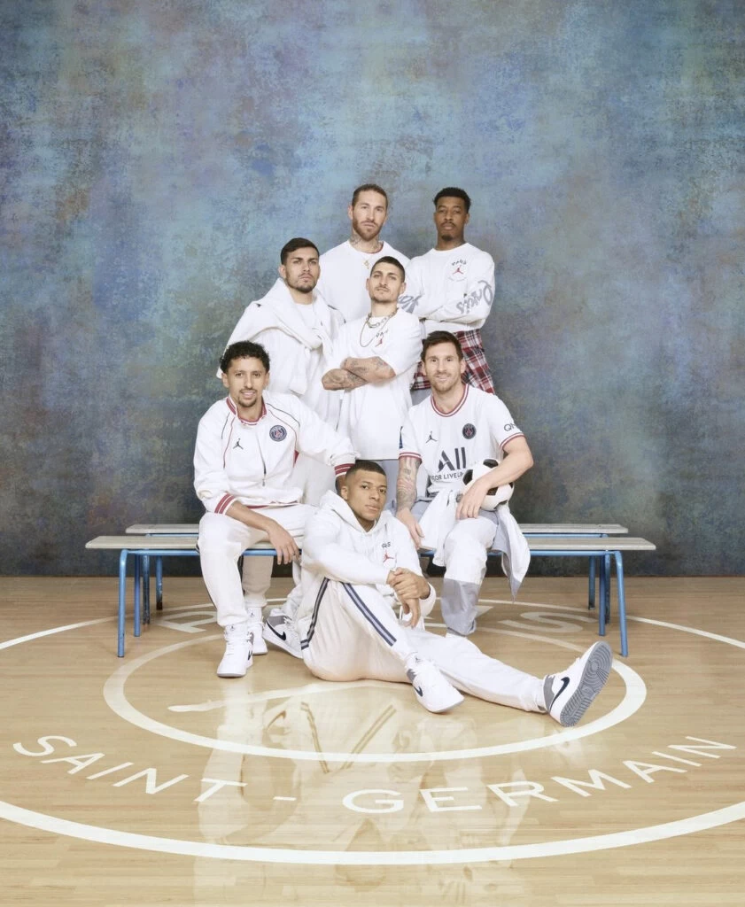
La camiseta blanca va acompañada de pantalones cortos a juego, que incorporan el patrón de diamantes del PSG, visto anteriormente en otros kits para esta temporada.
Además, la colaboración se extiende a una colección de estilo de vida más amplia, que incluye un Air Jordan 1 Mid que se lanzará en tallas para hombres, mujeres y niños.
Vemos camperas, buzos, pantalones largos, cortos, remeras y otros accesorios en las imágenes oficiales que compartió el equipo.
Michael Jordan la leyenda de los Chicago Bulls cumplio 59 años y te lo contamos
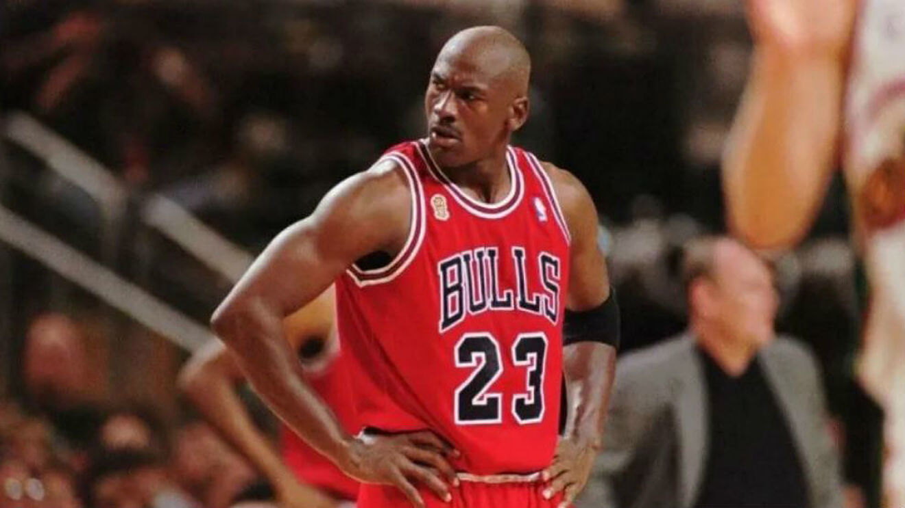
His Airness, su majestad, MJ, The Goat o como quieran llamarlo, Michael Jordan cumple el día de hoy 59 años y lo celebramos como corresponde.
Deportivamente hablando, Michael Jordan fue uno de los mejores atletas de la historia del deporte. Primero en la Universidad de Carolina del Norte demostró ser un joven con agallas para saltar rápidamente a la NBA. Segundo, una vez en los Bulls y codearse con sus compañeros más grandes, nos enseñó que estaba a la altura de las circunstancias. Tercero, cuando ganó su primer título era sólo el comienzo de una historia que hasta el día de hoy seguimos contando. Y, podríamos seguir contando sus récords, premios, anécdotas, conflictos y paseo por el Baseball
Su leyenda permanece viva con los miles de recuerdos de quiénes pudieron verlo en acción. Pero también en Netflix pueden ver la serie documental «The Last Dance» con el mismísimo Michael Jordan contándonos absolutamente todo sobre su carrera. Los títulos que ganó, su adicción a las apuestas, su gusto por el golf, el tiempo que dejó el basketball y se dedicó al baseball, rivales que hasta el día de hoy odia y mucho más. MJ nos regaló lujos y detalles de cada aspecto de su vida y obviamente hay un episodio dedicado a sus zapatillas Air Jordan que recomendamos ver siempre.
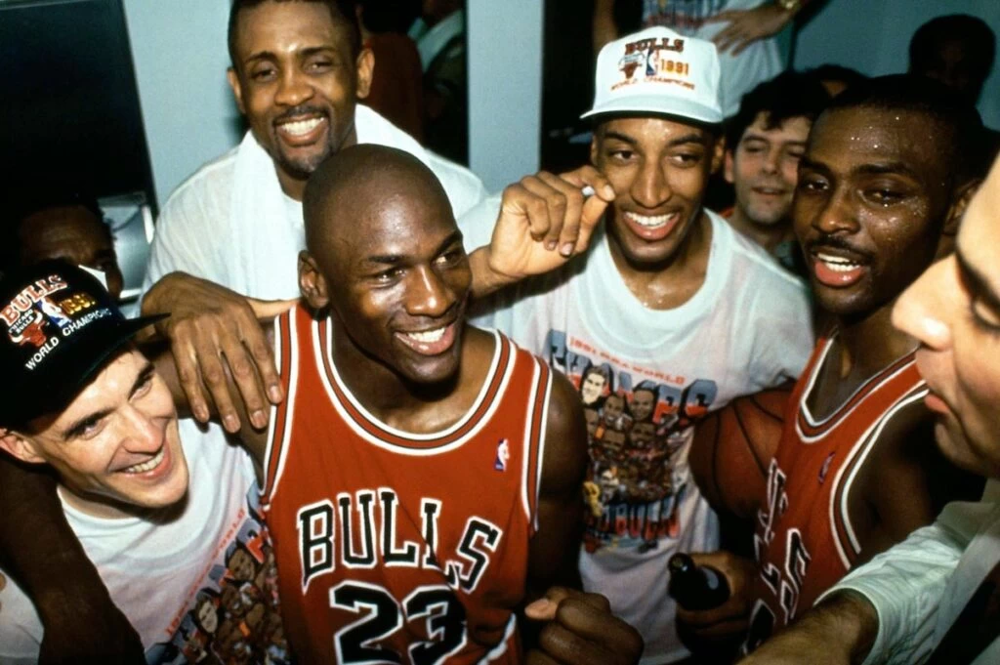
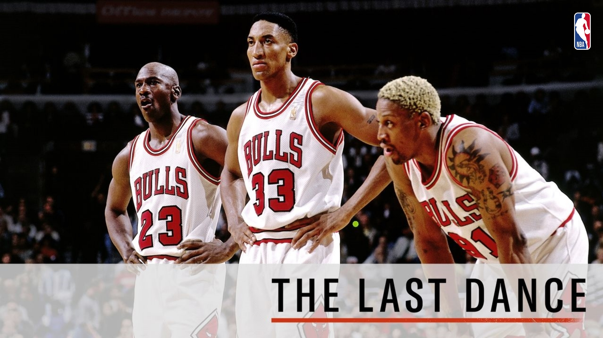
Premios de Michael Jordan
Ganó 6 anillos de la NBA, fue elegido el jugador más valioso (MVP) de las 6 finales que ganó, 5 veces fue el mejor jugador de todo el torneo, 2 veces ganador de la medalla dorada en los Juegos Olímpicos y una infinidad de récords y marcas personales que hasta el día de hoy lograron posicionarlo como el mejor jugador de básquet de todos los tiempos. Hoy lo reconocemos como uno de los propietarios de los Charlotte Hornets, la cara visible de la marca Jumpman y la leyenda del basketball que es. Michael se merece tener homenajes constantemente para que su legado sea eterno y jamás nadie se olvide todo lo que hizo
Contacto
Si queres reciber novedades de Musica,Ropa, etc. llena el formulario